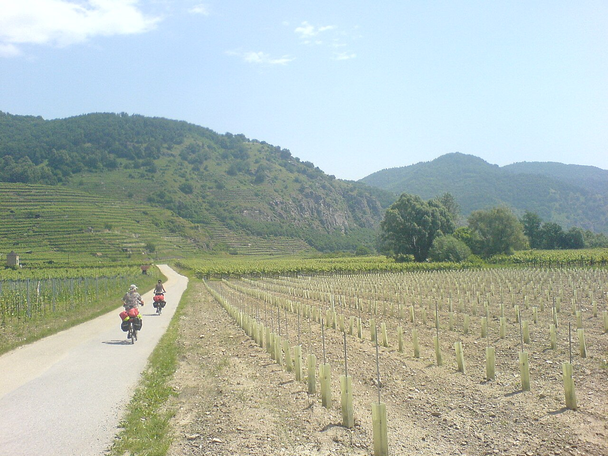

1. deň · asi 25. km
Hollenstein a Ybbs
Obed a krátka jesenná prechádzka pri rieke.
Kulturpark Eisenstraße / Wikimedia Commons, CC BY-SA 3.0
Waidhofen → Göstling → Lunzer See → Gaming → Waidhofen. To najlepšie cestou a itinerár podľa vašich dvoch GPX.
Pozrieť zastávky ↓
Ilustračná fotografia z Dunajskej cyklotrasy: Chris Bainbridge / Wikimedia Commons, CC0
Štart aj cieľ sú pri Parkdeck Schlosscenter vo Waidhofene. Prvý deň vedie popri Ybbs do Göstlingu; druhý cez Lunzer See, Gaming, Maria Seesal a Ybbsitz. Kilometre sú odčítané z priložených GPX a zaokrúhlené.
Vybrané podľa GPX a odporúčaní regiónu. Kilometre sú orientačné od štartu príslušného dňa.
Obed a krátka jesenná prechádzka pri rieke.
Kulturpark Eisenstraße / Wikimedia Commons, CC BY-SA 3.0

Jesenné výhľady a prechádzka po brehu. GPX vedie k jazeru.
Royalyty / Wikimedia Commons, CC BY-SA 3.0 AT

Prejdite nádvorie bývalého kláštora a dajte si tu dlhší obed.
Herbert Ortner / Wikimedia Commons, CC BY 3.0 AT
Ďalšie hlavné POI: Prvý deň Ofenloch (km 9) a železničný tunel pri Opponitzi (km 13,6) priamo na trase. Druhý deň Ybbsitz (km 50,5) s FeRRUM a Schmiedemeile. Maria Seesal je krátka pokojná zastávka pri kostole. Pfaffenschlag a Käfer’s slúžia skôr na oddych a občerstvenie. Voliteľne: nádvorie Schloss Rothschild pri štarte a Haus der Wildnis v Lunze. Tipy regiónu Mostviertel.
43,9 km · s pauzami približne 5–6 h

Štart vo Waidhofene; na cyklocestu sa napojíme cez Gstadt. Voliteľne si ešte pozrite nádvorie Schloss Rothschild pri centre.
Najvýraznejší prírodný úsek prvého dňa: divoká Ybbs a krátka fotopauza. K rieke sa pristupuje len na vybraných miestach. Viac o úseku.
Historický železničný tunel je obľúbený motív na fotografiu; pred ním je odpočívadlo s hojdacími sieťami.
Dlhšia pauza na obed a jesenná prechádzka pri Ybbs.
Občerstvenie v bývalej stanici pri trase, ak bude otvorené.
Nocľah. Na večer sa hodí prechádzka pri Ybbs a oddych pred dlhším druhým dňom.
61,8 km · s pauzami približne 7–8 h

Vyraziť ráno; druhý deň je dlhší a kopcovitejší.
Jazero je priamo v GPX. Nechajte si tu 30–60 minút na prechádzku po brehu a fotografie.
Krátke vydýchanie po stúpaní; odtiaľ sa klesá smerom ku Gamingu.
Hlavná obedná zastávka a prehliadka areálu. Informácie o kartúze.
Krátke zastavenie pri pútnickom kostole nad osadou.
Kováčske mestečko: FeRRUM na námestí alebo krátky úsek Schmiedemeile pri historických hámroch.
Návrat k autu vo Waidhofene. Mestský úsek od Gstadtu je už započítaný.
Parkdeck Schlosscenter je platený nepretržite, so zverejneným denným maximom 10 €. Zaplatenie pri odchode podľa ŠPZ. Pravidlá mesta.
Käfer’s a reštauráciu v Gamingu si over podľa konkrétneho dňa. Na druhý deň maj so sebou vodu a niečo na jedenie aj medzi obcami.
Prvý deň Ofenloch a Hollenstein; druhý deň Lunzer See a Kartause Gaming. Ostatné zastávky si prispôsobte tempu.